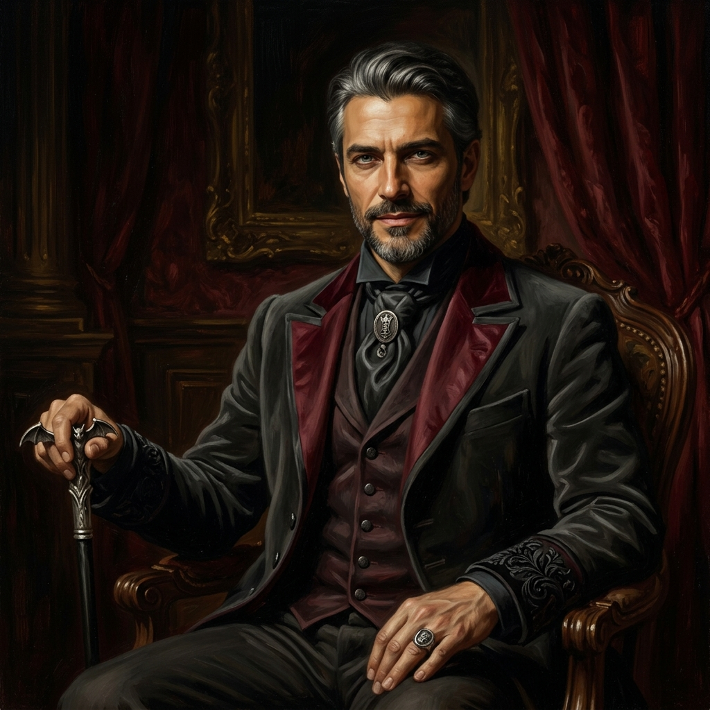
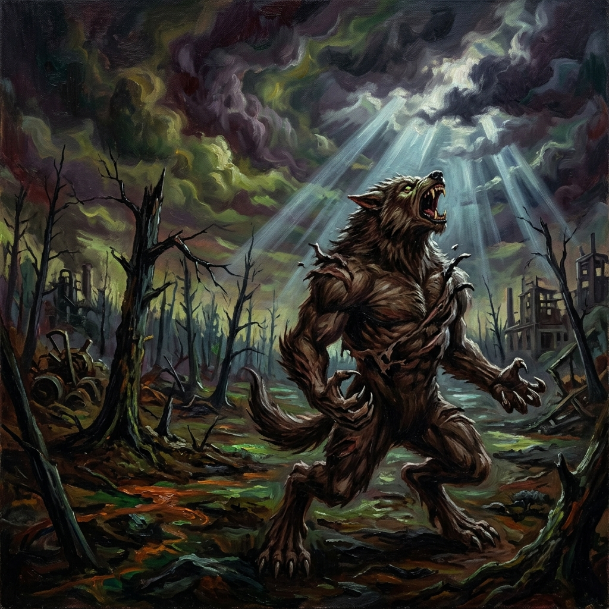
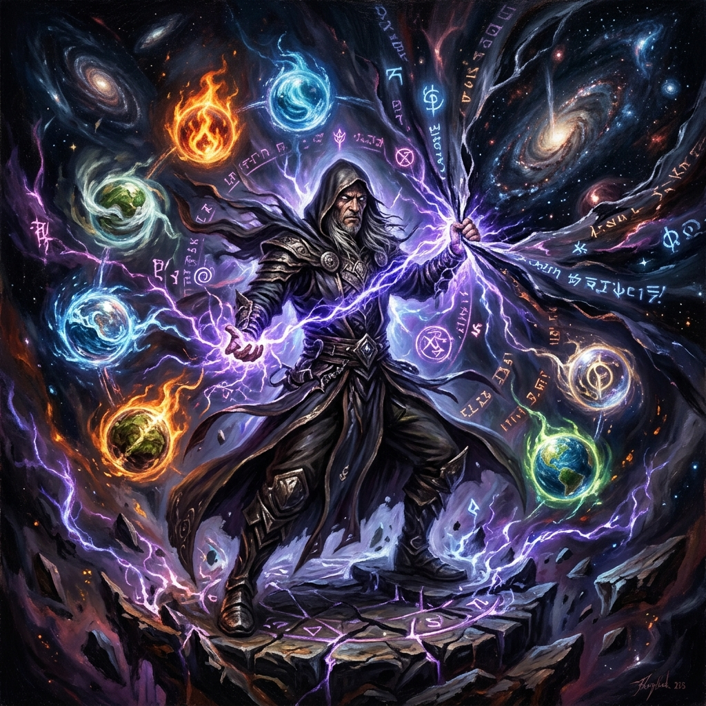

Vampiro:
A Máscara
Horror Pessoal & Intriga Política
Você foi transformado em um monstro sugador de sangue. A Besta dentro de você uiva por sangue enquanto a sociedade vampírica exige elegância. Equilibre sua Humanidade — ou sucumba à escuridão.

Lobisomem:
O Apocalipse
Horror Feral & Tragédia Ambiental
Os Garou são guerreiros sagrados de Gaia, lutando uma batalha perdida contra a Devastadora. Cada ato de fúria pode salvar o mundo — ou destruí-lo. Harano ou Hauglosk: qual será seu fim?

Mago:
A Ascensão
A Luta pela Realidade
A realidade é maleável — moldada pela crença coletiva. Você Despertou para esta verdade e agora briga contra a Tecnocracia pelo direito de definir o que é real. Nove Esferas. Infinitas possibilidades. Um Paradoxo mortal.
Caçador:
A Revanche
O Oprimido Contra o Sobrenatural
Você é humano. Sem superpoderes divinos, sem magia ancestral. Só perspicácia, fé, equipamento e a determinação de que a humanidade não será apenas gado. O desespero é seu combustível. Cuide para não se queimar.